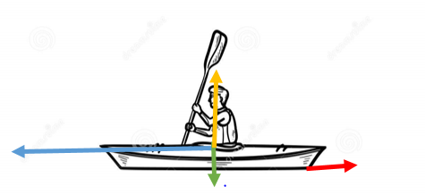
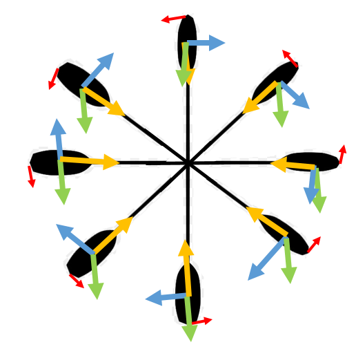

FORCES STUDIES
Diagrams and explanations
First we did an approach to the forces that goes through the kayak and the paddle. Then we continue to study the forces in Katharina’s body and we ended studying the forces in the actual seat to see what was the better structure needed.
FORCES THROUHG THE KAYAK
Normal force: any object, wholly or partially inmersed in a fluid, is buoyed up by a force equal to the weight of the fluid displaced by the object.
Linear displacement: uniform accelerated movement
Weight force: Katherina´s weight + kayak´s weight
Force of friction: resistence of water against the movement (also there is going to be another force of friction because of the resistence that the air is going to make against the kayak and the body of Katherina)
BUOYANCY CURVE
GRAVITY CURVE
RESULT
FORCES THROUGH THE PADDLE
Force of friction: resistence of water against the movement (also there is going to be another force of friction because of the resistence that the air is going to make against the kayak paddle)
Weight force: weight of the paddle
Centrifugal force: the apparent force that is felt by an object moving in a curved path that acts outwardly away from the center of rotation.
Centripetal force: the force that it is needed to keep an object moving in a curved path and that is directed inward toward the center of rotation.
FORCES IN KATHARINA'S BODY
We are going to do an analysis step by step of the forces that appear while Katherina is paddling. First of all we are going to set the axis of the hips as the reference axis. It is important to remember that Katherina´s weight is going to be involve in all the diagrams highlighted in purple.
IMAGE 1
IMAGE 2
IMAGE 3
IMAGE 1 & IMAGE 2
The first situation that is going to be analysed is when the right hand is above head level. In this situation the movement goes as we are going to explain. The right arm is going to be extended pushing forward the paddle on the right side while the left side is going backwards but without a pulling force being involve, so the movement in the left side is going to be passive. At the same time the left knee is going to be slightly elevated by the passive force that is transmited from hips to feet. And feet will trasnmit the force to the kayak making it moving forward through water
The second diagram is exactly the same as the previous one but with another perspective.
IMAGE 3
Here we have the back side. We can see that the forces in the arms are the same that we have explain in the previous diagrams. But we did not analysed the forces that appear in the back. As we can see in the diagram the back will be rotating to left when the left part of the paddle is inside the water. This will make a movement that we can see in the picture. The right side will be slightly move upwards while the left side will be moving downwards. This movement in the lower part of the back will create a tension that is going to be transmitted throught the legs creating the passive movement in the knees that has been explained before.
EXPLAINING VIDEOS
VIDEO 1
VIDEO 2
VIDEO 3
The videos are slow motion to see how is the movement ejecuted
VIDEO 1 & VIDEO 2
We start the analysis when the right hand is down. Both hands are parallels to the hips and the arms are stretch towards the body. Then the right hand goes paddling to the height of the knee, at the horizontal line of the hips. When the hand is in this position the knee from the opposite site starts to go up in passive way. This moment is accompanying by the movement of the opposite leg, in this case the left leg. In the middle point of this movement the knee is going to be elevated and while the movement still advancing the knee will go back to its relax position.
VIDEO 3
From the back view, we start to analyse the movement when the left paddle is in the water. The left hand is at the height of the hip, and goes backwards. While the right hand passes the vertical axis of the body to the height of the opposite shoulder. From this point on, a change will happen that consists in the left hand going to begin to rise until reaching the previous maximum point that is at the height of the shoulder but in this case of the left. In addition, this movement is accompanied by a twisting of the back.